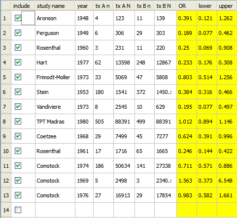

This section presents an example illustrating how to perform a meta-analysis using Open Meta-Analyst. To run the example, first open the example data set:
Open Meta-Analyst displays the data as shown below.

You can select the studies to include in the analysis using the check boxes in the "include" column.
| Entering Data | Running the Analysis | |